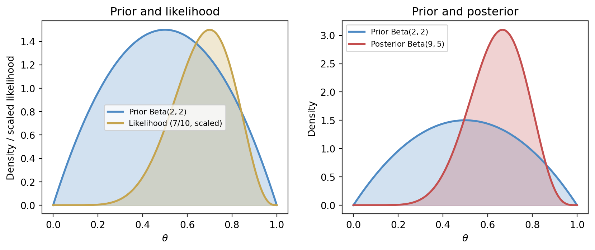
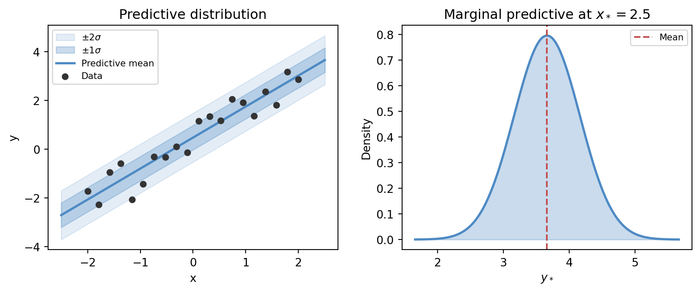
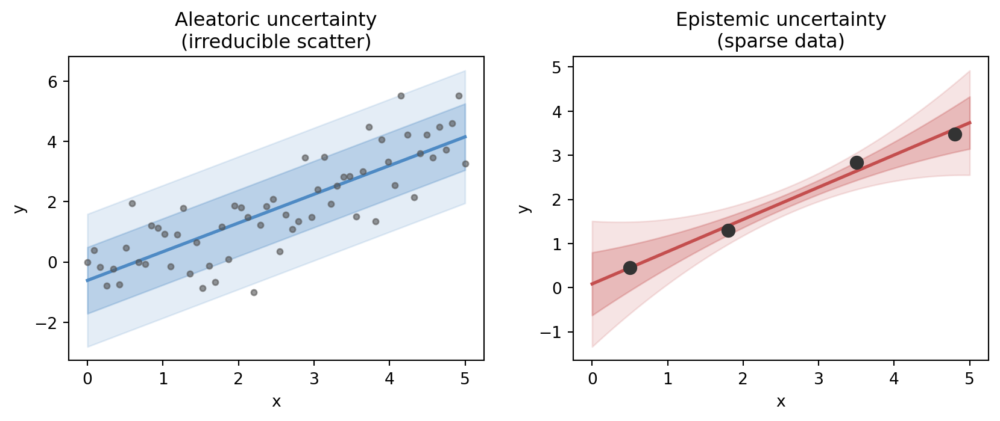
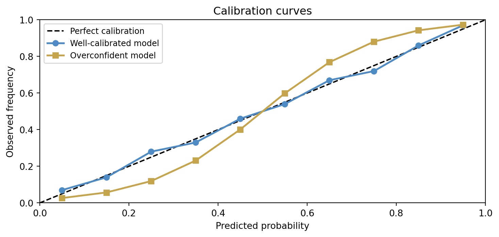

10 Probability, Bayesian Models, and Uncertainty
Probability enters machine learning not as decoration, but as the language we use when information is partial, outcomes are variable, and prediction must be made without certainty. If optimisation tells us how to fit models, probability tells us how to speak honestly about what is not known.
This chapter gathers several threads that the earlier series has already developed: random variables, distributions, conditional reasoning, estimation, and inverse thinking. The distinctive move here is to connect those ideas to the needs of modern learning systems: uncertainty-aware prediction, probabilistic classification, Bayesian updating, and calibration.
NoteIn this chapter
- Treat probability as a modelling language for partial information.
- Separate aleatoric (noise) from epistemic (knowledge) uncertainty.
- Use Bayesian updating as a structured way to revise belief with evidence.
- Demand calibration: probabilities should mean what they claim to mean.
10.1 Guiding examples
- A simple prior → posterior update you can compute by hand
- Predictive intervals that widen when evidence is thin
TipRunning example: Alberta wildfire smoke and station PM2.5
This chapter’s job in the smoke story is to speak honestly about uncertainty:
- Output prediction intervals for next-day PM2.5, not only point forecasts.
- For smoke alerts, output probabilities and check calibration.
- Distinguish what is noisy in the world (aleatoric) from what you do not know because data are thin or conditions shift (epistemic).
10.2 Prerequisite anchors
The strongest backward links are:
vol-06/01-probability-theory.qmdvol-06/02-distributions.qmdvol-07/probability/01-probability-theory.qmdvol-08/05-estimation-inverse.qmd
10.3 Probability as modelling language
When we write a deterministic function, we say exactly what output follows from a given input. When we write a probabilistic model, we admit that several outputs may be plausible and that our knowledge is incomplete.
This is not weakness. It is often the most mathematically responsible thing we can do.
In data science, uncertainty can enter from many directions:
- measurement noise
- hidden variables
- limited sample size
- changing environments
- incomplete model structure
Probability gives us a framework for carrying that uncertainty through the model instead of hiding it behind a single guess.
10.4 Random variables and distributions in learning
A random variable is not “randomness itself”. It is a rule assigning numerical values to uncertain outcomes. In machine learning we may treat a future demand, the class label of a new observation, or the error of a measurement as random variables whose distributions matter.
This language matters because distributions contain more than averages. They carry spread, asymmetry, tail risk, and conditional structure. A model that reports only point predictions often conceals precisely the information a real decision-maker needs.
10.5 Conditional probability and prediction
Prediction is usually conditional. We are not interested in the probability of an event in complete isolation, but in the probability of that event given the available evidence.
A medical model asks for the probability of illness given symptoms, history, and test results. A forecasting model asks for the distribution of tomorrow’s river flow given recent rainfall and snowpack. A classifier asks for the probability of each class given the observed features.
In that sense, much of machine learning can be read as the study of conditional structure.
10.6 Prior, likelihood, and posterior
The Bayesian grammar is especially helpful because it makes the logic of model revision explicit (Bishop 2006).
A prior expresses what is believed before the current data are incorporated. The likelihood describes how plausible the observed data are under different parameter values or hypotheses. The posterior combines the two, giving an updated state of belief after the evidence is taken into account.
Symbolically, the core relation is
\text{posterior} \propto \text{likelihood} \times \text{prior}.
This should not be read as an abstract slogan only. It is a disciplined answer to a practical question: how should we revise our beliefs when new information arrives?
To make this concrete, consider a simple coin-flip problem. We observe k heads in n trials and want to infer the probability parameter \theta. A \mathrm{Beta}(\alpha, \beta) prior for \theta is conjugate to the binomial likelihood, yielding a \mathrm{Beta}(\alpha + k,\; \beta + n - k) posterior — a clean closed-form update.
The left panel shows how the prior and likelihood supply complementary information: the prior is centred near 0.5, while the data nudge the likelihood toward 0.7. The right panel shows the posterior as the synthesis — shifted and considerably sharper than the prior. With only ten coin flips the posterior is still broad, and a sceptic with a stronger prior would be less convinced; that sensitivity to prior choice is a feature, not a bug, of the Bayesian framework.
10.7 Predictive distributions
In many applications, a single predicted value is not enough. We want a distribution for the future quantity, or at least a range with an interpretable level of confidence.
This is especially important when decisions are asymmetric. A hospital may care less about the average risk and more about tail events. A water manager may need to understand not only the expected flow but also the chance of an extreme shortfall. A weather forecaster may need to express the probability of freezing conditions, not only the predicted temperature.
Predictive distributions keep the model aligned with the decision context.
The predictive distribution at a new input x_* in a Gaussian regression model takes the form
p(y_* \mid x_*, \mathbf{X}, \mathbf{y}) = \int p(y_* \mid x_*, \theta)\, p(\theta \mid \mathbf{X}, \mathbf{y})\, d\theta,
where the integral averages the prediction over all plausible parameter values weighted by the posterior. The figure below shows what this looks like geometrically.

10.8 Uncertainty is not only noise
It is helpful to distinguish several sources of uncertainty:
- aleatoric uncertainty, arising from inherent variability or measurement noise
- epistemic uncertainty, arising from limited knowledge, sparse data, or model inadequacy
The terminology varies across fields, but the distinction is useful. Some uncertainty remains even with abundant data because the world itself is variable. Other uncertainty can be reduced by better models, better measurements, or more observations.
A mature treatment of AI does not collapse these into a single vague notion of “confidence”.
The figure below places both types side by side. In the aleatoric panel the data are dense but scatter irreducibly around the fitted line — adding more data would not eliminate the band. In the epistemic panel only a handful of points are available, and the uncertainty band fans out dramatically in the gaps: the same model, faced with sparse evidence, genuinely does not know what happens between observations.

10.9 Calibration
A probabilistic model can be sharp without being trustworthy, or trustworthy without being very informative. Calibration is the idea that stated probabilities should match long-run frequencies in an appropriate sense (Murphy 2022).
If a model repeatedly says events have probability 0.8, then roughly eight out of ten such events should occur over time. When this does not happen, the model may still rank cases well, but its uncertainty statements are misleading.
This is why uncertainty is not only about having probabilities. It is about having probabilities that deserve to be believed.
A calibration curve plots predicted probability against observed frequency across groups of predictions. Perfect calibration falls on the diagonal. Overconfident models produce S-shaped curves: they push predicted probabilities toward the extremes while actual frequencies remain more moderate. Underconfident models have a flatter slope.

The overconfident model’s curve bows away from the diagonal: at a predicted probability of 0.8 the actual frequency might be only 0.6. A decision-maker who takes those probabilities at face value would systematically misjudge risk. Calibration is therefore not merely a technical quality measure — it is a condition for probabilities to be actionable.
10.10 Bayesian updating as model revision
One of the quiet strengths of Bayesian reasoning is that it treats learning as a sequence of revisions. We do not pretend the model emerges once and for all in a single perfect fit. We begin with prior structure, encounter evidence, update, and repeat.
That habit fits naturally with the broader philosophy of this book. Models are approximations, not mirrors. New data do not merely fill in blanks; they reshape our state of belief.
10.11 A forecasting example
Suppose we want to predict tomorrow’s river flow. A deterministic model might produce a single number. A probabilistic model might instead produce a distribution whose spread reflects uncertainty in precipitation, snowmelt, and measurement error.
The second description is often more useful. Reservoir operation, flood warning, and drought planning depend not only on what is most likely, but on what is plausibly possible.
10.12 Interactive: Bayesian coin updating
The cell below lets you explore how prior choice and observed data interact to shape the posterior. Try a strong prior (high \alpha and \beta) with only a few observations and watch how little the data move the posterior. Then try a weak prior with many observations and notice how the data dominate.
TipWhat to try
- Set
PRIOR_ALPHA = PRIOR_BETA = 1(uniform prior) and see how the posterior is determined entirely by the data. - Set
PRIOR_ALPHA = PRIOR_BETA = 20(strong prior near 0.5) and increaseN_TRIALSto see how many flips are needed to move the posterior. - Set
N_HEADS = N_TRIALS(all heads) with a Beta(2,2) prior and observe the posterior never reaches \theta = 1.
import numpy as np
import matplotlib
matplotlib.use('Agg')
import matplotlib.pyplot as plt
from scipy import stats
import io, base64
# --- Try changing these parameters ---
PRIOR_ALPHA = 2 # Beta prior alpha (> 0)
PRIOR_BETA = 2 # Beta prior beta (> 0)
N_HEADS = 7 # observed heads
N_TRIALS = 10 # total flips (>= N_HEADS)
# Clamp inputs
N_TRIALS = max(N_TRIALS, N_HEADS)
PRIOR_ALPHA = max(PRIOR_ALPHA, 0.1)
PRIOR_BETA = max(PRIOR_BETA, 0.1)
theta = np.linspace(0, 1, 500)
prior = stats.beta(PRIOR_ALPHA, PRIOR_BETA).pdf(theta)
likelihood = stats.binom.pmf(N_HEADS, N_TRIALS, theta)
likelihood_scaled = likelihood / (likelihood.max() + 1e-12) * prior.max()
post_a = PRIOR_ALPHA + N_HEADS
post_b = PRIOR_BETA + (N_TRIALS - N_HEADS)
posterior = stats.beta(post_a, post_b).pdf(theta)
fig, axes = plt.subplots(1, 2, figsize=(9, 4))
ax = axes[0]
ax.fill_between(theta, prior, alpha=0.25, color='#4e8ac4')
ax.plot(theta, prior, color='#4e8ac4', lw=2,
label=f'Prior Beta({PRIOR_ALPHA:.1f},{PRIOR_BETA:.1f})')
ax.fill_between(theta, likelihood_scaled, alpha=0.25, color='#c5a44e')
ax.plot(theta, likelihood_scaled, color='#c5a44e', lw=2,
label=f'Likelihood ({N_HEADS}/{N_TRIALS}, scaled)')
ax.set_xlabel('θ')
ax.set_ylabel('Density / scaled likelihood')
ax.set_title('Prior and likelihood')
ax.legend(fontsize=8)
ax = axes[1]
ax.fill_between(theta, prior, alpha=0.20, color='#4e8ac4')
ax.plot(theta, prior, color='#4e8ac4', lw=2,
label=f'Prior Beta({PRIOR_ALPHA:.1f},{PRIOR_BETA:.1f})')
ax.fill_between(theta, posterior, alpha=0.25, color='#c44e4e')
ax.plot(theta, posterior, color='#c44e4e', lw=2,
label=f'Posterior Beta({post_a:.1f},{post_b:.1f})')
ax.set_xlabel('θ')
ax.set_ylabel('Density')
ax.set_title('Prior vs posterior')
ax.legend(fontsize=8)
fig.tight_layout(pad=2.0)
buf = io.BytesIO()
fig.savefig(buf, format='png', dpi=96, bbox_inches='tight')
buf.seek(0)
img_b64 = base64.b64encode(buf.read()).decode()
print(f'<img src="data:image/png;base64,{img_b64}" style="max-width:100%">')10.13 Looking ahead
The next chapters will use probability in several ways: classification losses, state estimation, information theory, and neural-network training all rely on uncertainty language. The details change, but the central habit stays the same: do not confuse a convenient point estimate with full knowledge.
For now, the key ideas to carry forward are:
- probability is a language for uncertainty-aware modelling
- prediction is usually conditional, not absolute
- Bayesian updating provides a disciplined revision rule
- predictive distributions are often more useful than single guesses
- calibration matters if probabilities are to guide decisions
10.14 Exercises and prompts
- Give an example of a situation where a point prediction would be less useful than a predictive distribution.
- Explain in words the roles of prior, likelihood, and posterior in Bayesian reasoning.
- What is the difference between having probabilistic predictions and having well-calibrated probabilistic predictions?
- Describe one source of uncertainty in a real-world forecasting or decision problem that would remain even if a great deal of data were collected.
Bishop, Christopher M. 2006. Pattern Recognition and Machine Learning. Springer.
Murphy, Kevin P. 2022. Probabilistic Machine Learning: An Introduction. MIT Press. https://probml.github.io/pml-book/book1.html.